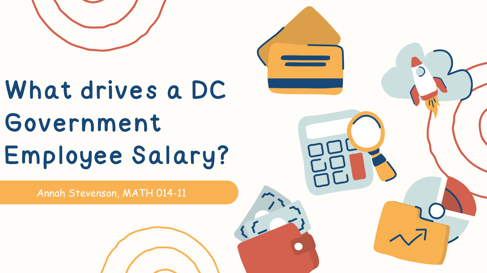
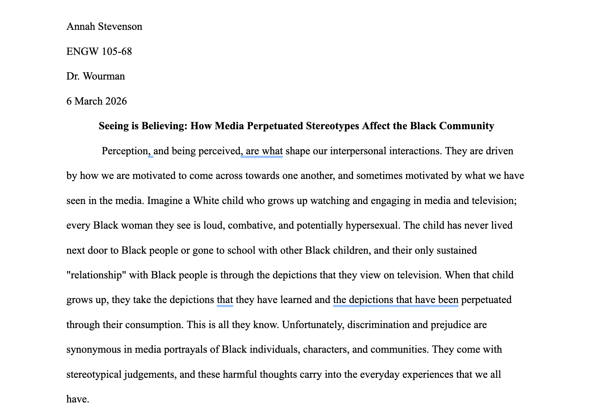
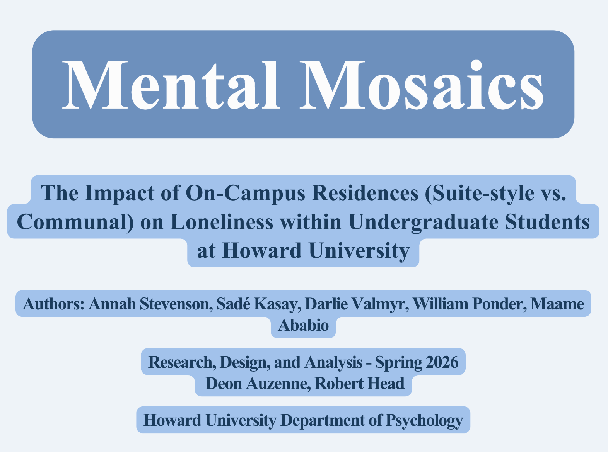

Annah Stevenson is a freshman Psychology and Sociology Double Major
at Howard University. She is an aspiring researcher and psychosociologist with research interests that include interpersonal everyday youth interactions between Black youth aged 3-14. Guided by an unwavering commitment to excel, Annah Stevenson is a bright and committed psychology and sociology scholar who utilizes academic resources and takes initiative in serving her community and her classmates. She is an avid scholar and volunteer at the Howard University Early Childhood Learning Center, which drives her passion for youth development. She is a consummate human being who appreciates the value of education and service. Annah is a loyal peer, intentional classmate, and dedicated scholar in the classroom.
Through this data analysis, the Neural Network team highlighted educational inequalites and outcomes based on many variables including school type (private, public, charter), dropout rates, and funding per student.

Through this data analysis project, Annah Stevenson analyzed the salary distribution of DC government agency employees and the importance of addressing pay equity gaps for workers in the DC Public Schools.

This research paper analyzes the correlation between negative portrayls of Black people in media and its connection to parasociality and cognitive accessibility.

In the Spring 2026 Psychology Research, Design, and Analysis Course, the Mental Mosaics group explored a bivariate correlational study related to on-campus housing (suite style vs. communal) and how that can impact levels of loneliness in HBCU undergraduate students at Howard University.